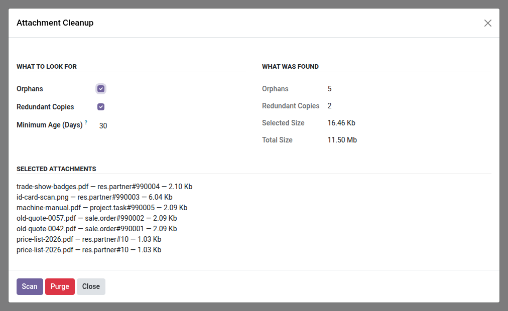
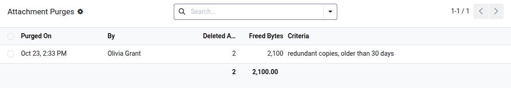

Attachment Cleaner
Orphans, redundant copies, filestore size — and a purge that leaves a trail.
A database's filestore ages badly. Migrations, cascading deletions at the database level and failed imports leave behind attachments that no longer point to anything. Odoo offers no inventory of them, and its automatic cleanup only touches what it produced itself.
What it adds
- 🔎 A report before anything else — the module counts, weighs and names; it only deletes on a second action.
- 🧷 Two criteria, no more — orphans, and redundant copies on the same document. The same file on two different documents is never touched: a template contract attached to two customers must stay that way.
- 🛡️ An explicit safety net — binary field values, files served by a URL, public attachments, views, and anything more recent than the minimum age: never offered.
- 🧾 Every purge leaves its trail — who, when, how many attachments, how many bytes, on which criteria, and the list of deleted files.
Real screenshots
1. A report before any deletion
Five orphans whose document no longer exists and two redundant copies of the same price list, listed one by one with their size, next to the total size of the store.

2. Every purge leaves a trace
Who purged, when, how many files, how many bytes and on which criteria.

Why install it
- The purge replays the report instead of trusting the saved selection: in between, the database kept on living.
- An attachment whose model disappeared along with its module is not flagged as an orphan: reinstalling the module would make it useful again, and a purge cannot be undone.
- Open source module, LGPL-3 license — no subscription, no external dependency.
Going further
Cleaning attachments is maintenance; organizing them is a job in itself. The OdooSkills range offers full document management — filing, versions, per-folder access rights, electronic signature. Full catalog: apps.odooskills.com.
LGPL-3 license — compatible with Odoo 19.0 Community and Enterprise. Support: apps@odooskills.com.